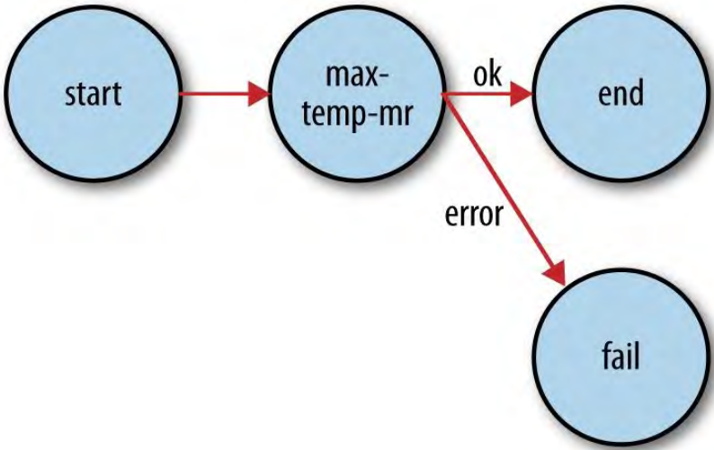

7、MapReduce工作流（MapReduce Workflows）
目前为止，讨论的数据处理例子都是简单地找出某年的最大气温。如果处理更加复杂，复杂性通常通过拥有更多的MapReduce jobs显现，而不是有更复杂的功能的map和reduce。换句话说，经验法则是：增加更多的jobs，而不是增加jobs的复杂度。
对于更加复杂的问题，值得考虑比MapReduce更高级的语言，例如Pig、Hive、Cascading、Crunch或者Spark。一个直接的益处是把你从做需求到MapReduce jobs的翻译中解脱出来，让你专注于分析要做的事。
7.1、把问题分解为MapReduce jobs（Decomposing a Problem into MapReduce Jobs）
把问题分解为更多（更简单）的MapReduc jobs的依据是这样做导致的是更加可组合以及更加可维护的mappers和reducers。
mapper通常进行输入解析、推断（筛选相关的fields）、过滤（移除不感兴趣的记录）。在之前的例子中，在一个mapper中实现了所有这些功能。使用Hadoop自带的ChainMapper库类可以把这个mapper切分为不同的mapper并把它们链接进一个mapper。使用ChainReducer连接，就可以在一个MapReduce job中运行一个mappers链，跟着运行一个reducer和另一个mappers链。
7.2、JobControl
当MapReduce工作流中有多个jobs，就有一个问题：jobs怎样按序执行。有多种解决方法，主要的考虑是是否有一个线性jobs链或者更复杂的jobs的有向无环图（DAG）。
对于线性链，最简单的方法是一个接一个运行jobs，运行下一个job前等前一个job运行成功， 如下：
JobClient.runJob(conf1);
JobClient.runJob(conf2);
如果job失败，runJob()方法会抛出IOException，那么pipeline中的后面的jobs就不会执行。依应用需求而定，也可以捕捉异常并清理之前jobs产生的中间数据。
新的MapReduce API也类似，除了要通过检验waitForCompletion()方法的Boolean返回值来确定job是否成功。
对于比线性链更复杂的，可以使用JobControl类。一个JobControl实例代表要运行的一个jobs图。增加job配置，告诉JobControl实例jobs直接的依赖关系。在一个线程中运行JobControl，它就会按照依赖顺序运行jobs。可以论询进度，当jobs完成时，可以查询所有jobs的状态和任何失败的相关错误信息。如果job失败，JobControl不会运行它的依赖。
7.3、Apache Oozie
Apache Oozie是一个运行依赖jobs工作流的系统。它由两部分组成：一个workflow engine保存和运行不同类型Hadoop jobs（MapReduce、Pig、Hive等等）组成的工作流；一个coordinator engine基于预定义的调度和数据可用性运行工作流jobs。Oozie是可扩展的，可以处理一个Hadoop集群中数千工作流（每个工作流由几十个job组成）的及时执行，
Oozie使重新运行失败的工作流变得更加简单，因为不会去浪费时间运行工作流成功的部分。
与JobControl（在客户端机器上提交jobs）不同，Oozie作为一个集群服务运行，客户端提交工作流的定义来稍后或者立即执行。用Oozie术语来说，一个工作流是action nodes和control-flow nodes的DAG。
action node执行一个工作流任务，例如移动HDFS中的文件；运行一个MapReduce、Streaming、Pig或者Hive job；执行Sqoop导入；或者运行任意一个shell或者Java程序。control-flow node通过逻辑条件结构（可能根据较早action node执行结果的不同而执行不同的执行分支）或并行执行来控制行为（actions）之间的工作流执行。当工作流完成后，Oozie进行HTTP回调来通知客户端工作流的状态。也可以在工作流进入或退出action node时获取回调。
7.3.1、定义一个Ooize工作流（Defining an Oozie workflow）
工作流定义通过使用Hadoop Process Definition Language在XML中写成，可以在Oozie官网查看规范。
例 6-14 Oozie workflow definition to run the maximum temperature MapRedue job
<workflow-app xmlns="uri:oozie:workflow:0.1" name="max-temp-workflow">
<start to="max-temp-mr"/>
<action name="max-temp-mr">
<map-reduce>
<job-tracker>${resourceManager}</job-tracker>
<name-node>${nameNode}</name-node>
<prepare>
<delete path="${nameNode}/user/${wf:user()}/output"/>
</prepare>
<configuration>
<property>
<name>mapred.mapper.new-api</name>
<value>true</value>
</property>
<property>
<name>mapred.reducer.new-api</name>
<value>true</value>
</property>
<property>
<name>mapreduce.job.map.class</name>
<value>MaxTemperatureMapper</value>
</property>
<property>
<name>mapreduce.job.combine.class</name>
<value>MaxTemperatureReducer</value>
</property>
<property>
<name>mapreduce.job.reduce.class</name>
<value>MaxTemperatureReducer</value>
</property>
<property>
<name>mapreduce.job.output.key.class</name>
<value>org.apache.hadoop.io.Text</value>
</property>
<property>
<name>mapreduce.job.output.value.class</name>
<value>org.apache.hadoop.io.IntWritable</value>
</property>
<property>
<name>mapreduce.input.fileinputformat.inputdir</name>
<value>/user/${wf:user()}/input/ncdc/micro</value>
</property>
<property>
<name>mapreduce.output.fileoutputformat.outputdir</name>
<value>/user/${wf:user()}/output</value>
</property>
</configuration>
</map-reduce>
<ok to="end"/>
<error to="fail"/>
</action>
<kill name="fail">
<message>MapReduce failed, error message[${wf:errorMessage(wf:lastErrorNode())}]
</message>
</kill>
<end name="end"/>
</workflow-app>
这个工作流由三个control-flow nodes和一个action node：一个start控制节点，一个map-reduce action node，一个kill控制节点，一个end控制节点。节点和它们之间的过渡如图6-4。
图 6-4 Transition diagram of an Oozie workflow

所有的工作流必须都有一个start和一个end节点。当工作流job启动，它过渡到start节点指定的节点（这里是max-temp-mr action node）。当job过渡到end节点时工作流job成功。可是，如果工作流job过渡到了kill节点，它被认为失败并上报工作流定义中message元素指定的错误信息。
这个工作流定义文件指定了map-reduce行为。前两个元素，job-tracker和name-node，用于指定提交job的YARN资源管理器（或者Hadoop 1中的jobtracker）和输入输出数据的namenode（实际上是一个Hadoop文件系统URI）。这两个都被参数化，以便工作流定义不被绑定到特定的集群。参数在提交时通过工作流job属性指定。
可选的prepare元素在MapReducejob运行前运行，被用于目录删除（也可以用于目录创建）。通过确保job运行前输出目录的状态，Oozie可以在job失败时安全地重新运行action。
要运行的MapReduce job用嵌套的指定Hadoop配置name-value对的元素在configuration元素中指定。Oozie提供了一系列和工作流交互的功能。例如${wf:user()}返回启动当前工作流的用户的名字，可以使用它来指定正确的文件系统路径。
7.3.2、打包和部署一个Oozie工作流应用（Packing and deploying an Oozie workflow applicaiton)
工作流应用由工作流定义和所有的运行相关资源（比如MapReduce JAR文件、Pig脚本，等等）组成。应用必须附加到一个简单的目录并且部署到HDFS以便可以被Oozie访问。对于这个工作流应用，把所有文件放在max-temp-workflow目录，如下所示：
max-temp-workflow/
├── lib/
│ └── hadoop-examples.jar
└── workflow.xml
工作流定义文件workflow.xml必须出现在这个目录的最上层。包含应用的MapReduce类文件的JAR文件放在lib目录中。这种层级关系的工作流应用可以通过Ant或Maven等合适的构建工具构建。构建成功后，将它复制到HDFS。
% hadoop fs -put hadoop-examples/target/max-temp-workflow max-temp-workflow
7.3.3、运行一个Oozie工作流（Running an Oozie workflow job）
OOZIE_URL环境变量指定Ooize命令使用的Oozie server：
% export OOZIE_URL="http://localhost:11000/oozie"
运行工作流job：
% oozie job -config ch06-mr-dev/src/main/resources/max-temp-workflow.properties \
-run
job: 0000001-140911033236814-oozie-oozi-W
-config选项为workflow XML文件中的参数指定了一个本地的Java properties文件；另外oozie.wf.application.path属性告诉Oozie工作流应用在HDFS中的位置。属性文件如下：
nameNode=hdfs://localhost:8020
resourceManager=localhost:8032
oozie.wf.application.path=${nameNode}/user/${user.name}/max-temp-workflow
使用-info选项获取工作流job的信息：
% oozie job -info 0000001-140911033236814-oozie-oozi-W
输出展示的状态包括RUNNING，KILLED，SUCCEEDED。也可以使用Oozie Web UI来获取信息：http://localhost:11000/oozie。
job执行结束，查看结果：
% hadoop fs -cat output/part-*
1949 111
1950 22
这里的Oozie应用例子，只是Oozie的皮毛，可以去Oozie官网了解更多。